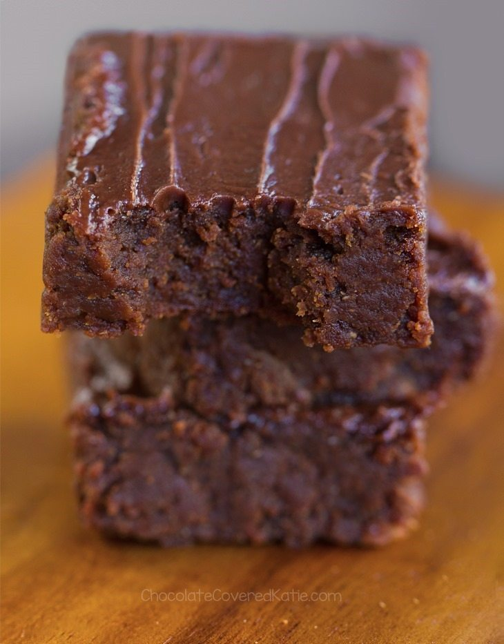

<h1>Vegan Sweet Potato Brownies</h1>

<h2>Ingredients</h2>
<ul>
    <li>3/4 cup sweet potato puree</li>
    <li>1 cup peanut butter</li>
    <li>1 tsp vanilla extract</li>
    <li>1/4 cup plus 2 tbsp flour</li>
    <li>1/2 cup mini chocolate chips</li>
    <li>2/3 cup sugar</li>
    <li>1/4 cup plus 2 tbsp cocoa powder</li>
    <li>1 1/2 tsp baking soda</li>
    <li>1/8 tsp salt</li>
</ul>